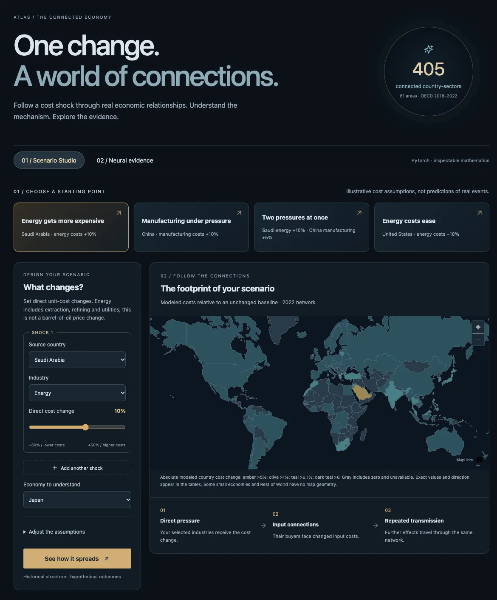
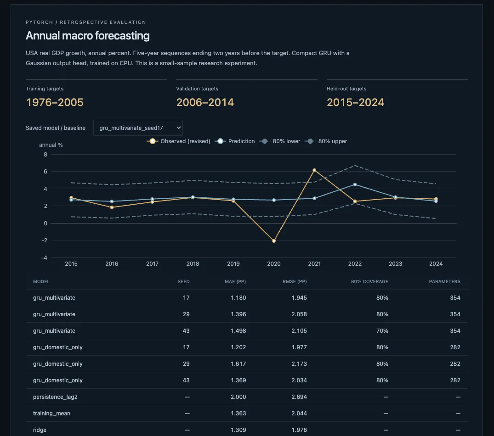

Mission 04 / Economic research terminal
ATLAS
An economic research terminal that traces how a cost shock travels through the world's production networks.
Real country data, seven OECD production tables, a PyTorch scenario solver and twelve saved neural checkpoints, served by one FastAPI process on your own machine. Every result is labelled as observed history, a hypothetical scenario, or a learned prediction.

What it is
A research terminal for the world economy that runs on one laptop and shows its working.
Pick a country and ATLAS shows its observed history. Pick a sector and a cost change, and it traces where that cost goes through the real supplier network, round by round. Ask for a forecast and it runs a saved PyTorch checkpoint next to the baselines it has to beat.
It is a local research terminal, not a hosted service. One command builds the interface, verifies every data and model hash, and starts a single loopback server. No account, no credentials, no cloud.
Scenario Studio
One change. A world of connections.
The studio loads seven OECD production tables (2016 to 2022), aggregated to 405 country-sector nodes across 81 areas. You set up to five direct cost shocks and a pass-through rate. PyTorch solves the whole system exactly in float64, then differentiates it with autograd, so each source's contribution to the result is computed, not guessed.
p = solve(I − α Aᵀ, s)
direct: s first round: α Aᵀ s later rounds: the restThe result is a hypothetical cost change on historical structure. It is not GDP, inflation or an asset return, and the page says so beside every number.

The network
Each table is checked before use: flows and outputs reconcile after aggregation, all seven spectral radii are below one, and six raw transaction blocks were summed independently and matched. Published accounting exceptions stay visible rather than being balanced away.

The models
Ridge regression beat every neural and graph model.
A small graph network (81 parameters) predicts each node's output growth from the previous year's network. It trains on 2018 to 2020, validates on 2021, and is tested once on 2022. Three seeds, a no-graph ablation and three baselines are all reported. The graph does not consistently beat its own ablation, and ridge has the lowest error.
A separate GRU (354 parameters) forecasts US annual GDP growth on ten held-out years. Performance varies by seed, and it does not consistently beat ridge or the training mean.

Speed
A full 405-node scenario returns in a median of 11.0 ms. That is a warm request on one machine, measured locally. It is not a load test, a cold start, or a promise for other hardware.
Limits
A local, single-user research terminal. An internet-facing version would need authentication, a security review and monitoring that do not exist.
The graph experiment has one held-out year and dependent nodes. Ridge wins. No generalization, calibration or causal claim follows.
World Bank history is revised and has no release vintages, so no point-in-time backtest is possible.
Scenarios use fixed historical coefficients and one uniform pass-through rate. No identified causal oil or monetary shock, and no asset-price bridge.
Browser tests ran in Chromium on macOS. Safari, Firefox and human accessibility testing are not verified.
Checks
44 backend tests and a 27-test Chromium suite passed on the v0.1.2 build. New tests compare the PyTorch solve with an independent SciPy solver and check autograd against finite differences. The release gate replays all twelve checkpoints before the app starts. Setup, backend tests and the build also pass on clean macOS, Windows and Linux runners in GitHub Actions.
npm ci
npm run setup
npm run atlas # opens on http://127.0.0.1:8000Python, PyTorch, FastAPI, DuckDB, Parquet, SQLite, NumPy, SciPy, CVXPY, React, TypeScript, Vite, MapLibre, ECharts, Playwright
Figures and screenshots on this page come from the atlas repository and are read from data/projects.json.